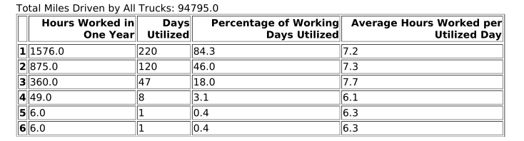
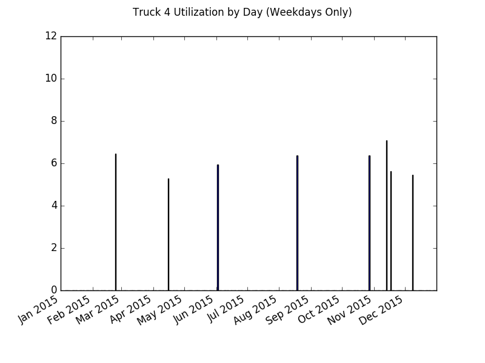
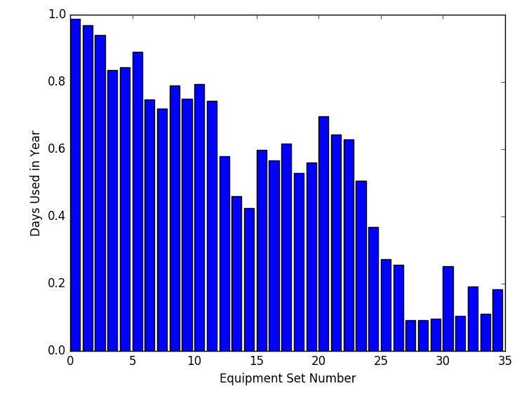
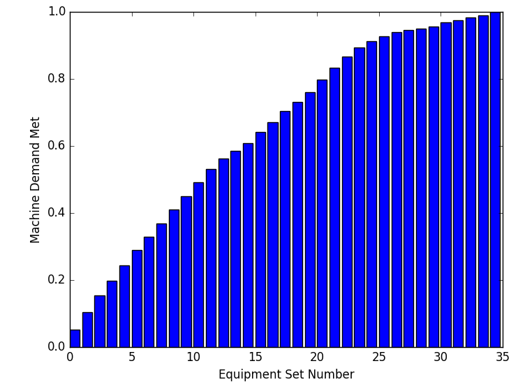

Reporting Our Results¶
Upon completion of the hauler routing for every day in our data set, we are left with three complete pieces of information as our results.
- how much demand each site had each day (smoothed)
- how many miles the fleet of haulers traveled each day
- how many hours each hauler worked each day
All of this information we then compile into a report which can then be used to make a calculation of the cost of this variation’s delivery system.
Equipment Hauler Cost¶
The first step in the reporting process is to summarize how often each hauler is utilized. Each day when we recorded the hours each hauler worked, we assigned hours to haulers from greatest to least, so the first hauler got the most hours, the second got the second most, etc. By doing this, when we average how many hours each hauler works each day and how many days in a time period each hauler worked, we ensure the fewest amount of haulers do the greatest amount of work. Based on how often each hauler is utilized, a decision can be made as to whether or not that hauler needs hired and his semi needs purchased, or if overtime by other haulers can be worked to cover the extra drop-offs and pick-ups. Later in the reporting process, this decision can be reinforced by graphs mapping out how much each hauler works on each day, telling us whether or not such an overtime strategy would be effective in replacing a given equipment hauler. With this information we can calculate the cost to staff the required number of equipment haulers, the first required piece of information in estimating cost.
For example, the image below illustrates what the results of this summary might look like. It’s pretty easy to tell that the last three haulers probably do not need hired. The second image typifies the graph that maps how much each hauler works each day, and supports the last three not being hired as \(4\)‘s hours are pretty spread out, could be covered by another hauler working extra, and are greater than \(5\)‘s and \(6\)‘s.
 Semi-Truck Cost¶
Next we can induce how much should be spent on equipping our haulers with semi- trucks. We already know how many trucks will be needed (as we would like one for each hauler), but another part of the cost comes from how often we have to replace the semi-trucks based on how many miles they run per period of time. This part of the calculation begins by summing the total number of miles the fleet runs each day for our time period. An example of this number appears at the top of the first image. Then taking the ratio of fleet expected lifetime mileage and time period mileage yields how many time periods the fleet can run before replacement. Knowing the size of our fleet and how often it needs replaced, we can infer costs for our semi-trucks, our second crucial piece of information.
Equipment Sets Cost¶
One final crucial piece of information has yet to be determined for making our cost calculation, and that is how many sets of equipment will be needed for this system to work. For each day in our time range, we repeated the following process:
- If a set of equipment is at a site, mark it as in use. If it gets picked up from that site later in the day, it is still being used as it either goes to another site or spends the day returning to the hub.
- If a site has a demand for equipment to be picked-up, assign that number of that site’s sets of equipment to be free for usage elsewhere.
- If a site has a demand for equipment to be dropped-off, assign that number of sets of equipment to that site. This can include the sets of equipment that were just released, as haulers can meet one site’s demand for drop-offs by picking-up from a site that released equipment on that day.
- If a set of equipment is at a site, mark it as in use. We repeat this step to ensure that additional sets of equipment that were brought out to job sites, if necessary, are counted as in use.
Also worth noting in the process, the sets of equipment are indexed in increasing order, and assignment is made to the set of available equipment with the lowest index, ensuring we use the smallest number of equipment sets for the majority of the work.
From here we make two graphs to illustrate the machine set usage. The first graph depicts how often each set of equipment gets used, helping us decide whether or not a given set of equipment should be bought or rented. The second graph shows us how much additional utility each set of equipment adds, further detailing how many equipment sets are needed to meet the demand. With this information, we can now infer how many sets of construction equipment are needed as well as how much each set will cost (renting/buying is determined by a utilization threshold, anything below is rented and above is bought). An example of the first graphic is shown below, followed by an example of the second. With an idea in hand of what threshold of utilization is needed to buy a set of equipment vs. rent it, we can calculate a total cost for the sets of equipment required by the delivery system.
 Decision¶
At this point, all of the above information is compiled into a single report
corresponding to the given variation of a region, and can be used to calculate
the cost of this variation’s delivery system subject to the time window used.
For an example of what a complete report looks like, I invite you to download
topeka_base_report.pdf (available for
download at https://github.com/spkelle2/Equipment_Routing if you’re reading
from a pdf). Finding the minimum
cost of all variations and time windows tested for a given geographical region
reveal to us the estimated cost of investment for the internal delivery system.
In the case of the construction company, comparing these minimum costs to the
current cost of operation in each of their geographical regions was used to
determine if the internal delivery system was desirable.
In summary, the results of all the code and models are accurate estimates of the investments an organization would need to support a single, large commodity delivery network. These investments can be clearly interpreted by means of the graphs compiled in the output report. With a full means now of understanding how a decision can be made, I invite you to look at my closing remarks on the project.
Continue to Conclusion
Documentation¶
Report generator:
-
reporting.make_report(data, variation, fixed_parameters)¶ Creates a PDF report of truck and equipment usage over the time range
Details miles traveled by the fleet of trucks, utilization rates for each equipment hauler, and utilization rates for each set of equipment.
Parameters: - data (dict) – A dictionary containing daily site demands, truck mileage totals, and hours worked by each hauler
- variation (str) – The variation of the geographical region for which we solve
- fixed_parameters (dict) – Parameters that are constant for any variation and region (as defined in the main function)
Summarization of hauler utilization:
-
reporting.summarize(df)¶ Computes summary statistics for each equipment hauler
Statistics include the following: total hours worked by each hauler in the time range, number of days each hauler recorded time working, proportion of working days each hauler actually worked, average hours each hauler records on days he works
Parameters: df (DataFrame) – How many minutes each hauler works each day (from hours_df) Returns: summary – A dataframe with the summary statistics outlined above Return type: pandas.core.frame.DataFrame
Bar graph for daily hours of a hauler:
-
reporting.hauler_graph_maker(hours_df, index, plotlist, directory_name, variation)¶ Plots a bar graph detailing amount of hours an equipment hauler worked each day
Parameters: - hours_df (DataFrame) – How many minutes each hauler works each day
- index (int) – Which hauler we are currently plotting
- plotlist (list) – List of strings containing file names for all previously created hauler plots
- directory_name (str) – File path of our working directory
- variation (str) – The variation of the geographical region for which we solve
Returns: plotlist – List of filepaths for previously made graphs in this variation
Return type: list
Equipment set utilization:
-
reporting.equipment_usage_analysis(demand_df, directory_name, variation)¶ Determines for each day whether or not a given set of equipment was used
Parameters: - demand_df (DataFrame) – How many sets of equipment each site needs dropped-off or picked up each day
- directory_name (str) – The path for the directory where we’ll save our graphs
- variation (str) – The variation of the geographical region for which we solve
Returns: usage – A matrix of binaries representing whether or not a given set of equipment was utilized on a given day
Return type: numpy.ndarray
Equipment set utilization graphs:
-
reporting.equipment_graph_maker(demand_df, variation, directory_name, plotlist)¶ Makes bar graphs for proportion of time range equipment is utilized and proportion of demand that can be met with a given number of equipment sets
Parameters: - demand_df (DataFrame) – How many sets of equipment each site needs dropped-off or picked up each day
- variation (str) – The variation of the geographical region for which we solve
- directory_name (str) – The path for the directory where we’ll save our graphs
- plotlist (list) – List of filepaths for previously made graphs in this variation
Returns: plotlist – List of filepaths for previously made graphs in this variation
Return type: list